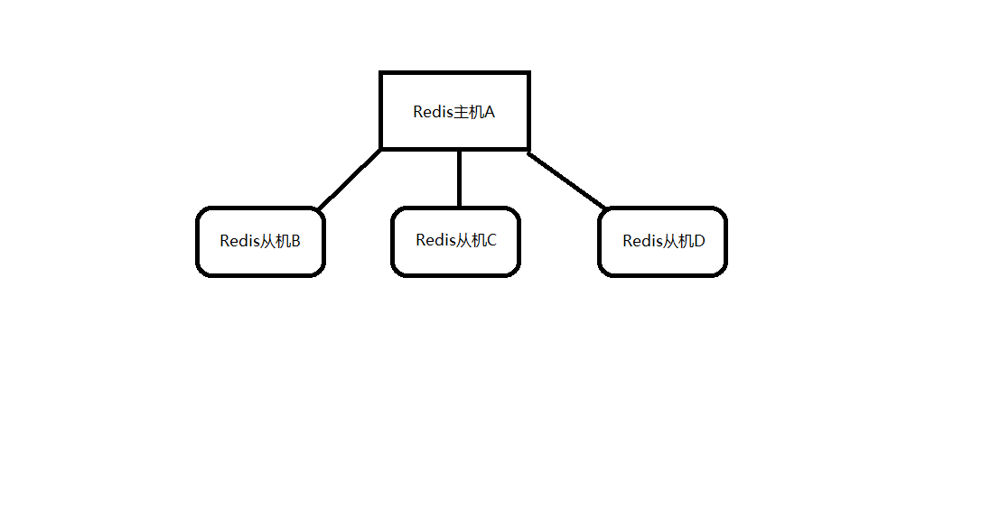

redis主从模式的配置
redis单例提供了一种数据缓存方式和丰富的数据操作api ，但是把数据完全存储再单个redis中会有两个问题：数据备份和数据量大造成性能低下。主从模式出现就是为了解决单例所带来的问题。
主从模式指：
使用一个redis实例作为主机，其余的实例作为备份机。主机和从机的数据完全一致。主机支持数据的写入和读取等各项操作，而从机则只支持与主机数据的同步和读取，也就是说，客户端可以将数据写入到主机，由主机自动将数据的写入操作同步到从机。
主从模式很好的解决了数据备份问题，并且由于主从服务数据几乎是一致的，因而可以将写入数据的命令发送给主机执行，而读取数据的命令发送给不同的从机执行，从而达到读写分离的目的。如下图的主机和三个从机。

至此redis主从模式的配置可以理解为多个不同的redis实例通过一定的配置告知其相互之间的主从关系。
主从模式的配置主要的配置点有两个：
当前实例端口号和当前实例是主机还是从机，是从机的话其主机的ip和端口是什么？
一般的redis目录下的redis.conf保存的是默认配置，尽量不要对其进行修改.
这里我们复制三份redis.conf文件，分别命名为6379.conf，6380.conf和6381.conf
6379.conf的配置：
1 | bind 127.0.0.1 |
6380.conf和6381.conf的配置：
1 | bind 127.0.0.1 |
1 | bind 127.0.0.1 |
可以看到，端口为6380和6381的实例被配置为端口为6379的实例的从机。
配置完成后使用redis-server分别执行如下命令启动三个实例：
1 | .\redis-server 6379.conf |
启动之后分别开启三个命令行工具(即redis客户端)分别执行以下命令连接redis实例：
1 | .\redis-cli -p 6379 |
分别在三个命令行工具中执行一个get命令，获取键名为msg的数据，如下所示：
1 | 127.0.0.1:6379> get msg |
1 | 127.0.0.1:6380> get msg |
1 | 127.0.0.1:6381> get msg |
可以看到，在三个redis实例中都不存在键为msg的数据，现在我们在主机6379上设置一个键为msg的数据，如下所示：
1 | 127.0.0.1:6379> set msg "hello" |
可以看到设置成功了，此时我们在6380和6381的实例上执行get msg的命令，如下所示：
1 | 127.0.0.1:6380> get msg |
1 | 127.0.0.1:6381> get msg |
可以看到，虽然我们只是在6379的实例上设置了msg这条数据，但是在6380和6381的实例上也存有了相应的数据，说明我们成功配置了redis的主从模式。另外，如果不在配置文件中指定主从节点的关系，也可以在启动相关redis实例之后使用slaveof命令来指定当前节点称为某个节点的从节点，如：
1 | 127.0.0.1:6380> slaveof 127.0.0.1 6379 |
redis中sentinel(哨兵)配置
redis主从模式解决了数据备份和单例可能存在的性能问题，但是其也引入了新的问题。
主从模式配置的几个实例，每个实例都会有不同的IP(如果在不同机器上)和端口号，从上面可知，主从模式将读写分配给不同的实例进行从而提高吞吐量，但是也会有另外一个问题，因为每个客户端连接redis都指定了IP和端口号，如果所连接的redis因故障下线，就只能手动去更改客户端配置重新连接，另外如果是主节点故障，那么那些从节点的同步会中断，也需要人工去转移工作。
为了解决以上问题，redis在2.8版本正式推出sentinel(哨兵)架构。
每个sentinel节点其实就是一个redis实例。与主从节点不同的是sentinel节点作用是用于监控redis数据节点的，而sentinel节点集合则表示监控一组主从redis实例多个sentinel监控节点的集合。
比如有主节点master和从节点slave-1、slave-2，为了监控这三个主从节点，这里配置N个sentinel节点sentinel-1，sentinel-2，...，sentinel-N。
对于一组主从节点，sentinel只是在其外部额外添加的一组用于监控作用的redis实例。在主从节点和sentinel节点集合配置好之后，sentinel节点之间会相互发送消息，以检测其余sentinel节点是否正常工作，并且sentinel节点也会向主从节点发送消息，以检测监控的主从节点是否正常工作。
前面讲到，sentinel架构的主要作用是解决主从模式下主节点的故障转移工作的。这里如果主节点因为故障下线，那么某个sentinel节点发送检测消息给主节点时，如果在指定时间内收不到回复，那么该sentinel就会主观的判断该主节点已经下线，那么其会发送消息给其余的sentinel节点，询问其是否“认为”该主节点已下线，其余的sentinel收到消息后也会发送检测消息给主节点。
如果其认为该主节点已经下线，那么其会回复向其询问的sentinel节点，告知其也认为主节点已经下线，当该sentinel节点最先收到超过指定数目（配置文件中配置的数目和当前sentinel节点集合数的一半，这里两个数目的较大值）的sentinel节点回复说当前主节点已下线，那么其就会对主节点进行故障转移工作，故障转移的基本思路是在从节点中选取某个从节点向其发送slaveof no one（假设选取的从节点为127.0.0.1:6380），使其称为独立的节点（也就是新的主节点），然后sentinel向其余的从节点发送slaveof 127.0.0.1 6380命令使它们重新成为新的主节点的从节点。
重新分配之后sentinel节点集合还会继续监控已经下线的主节点（假设为127.0.0.1:6379），如果其重新上线，那么sentinel会向其发送slaveof命令，使其成为新的主机点的从节点，如此故障转移工作完成。 简单来说就是：当redis服务为主从的时候如果主节点挂掉，则会选取一个从节点为master，当以前的master重启之后不再是master而为slave。
创建并修改sentinel.conf
复制三个配置文件：sentinel-26379.conf，sentinel-26380.conf和sentinel-26381.conf。分别按照如下示例编辑这三个配置文件
1 | port 26379 |
属性说明
- port：当前Sentinel服务运行的端口
- sentinel monitor mymaster 127.0.0.1 6379 2：Sentinel去监视一个名为mymaster的主redis实例，这个主实例的IP地址为本机地址127.0.0.1，端口号为6379，而将这个主实例判断为失效至少需要2个 Sentinel进程的同意，只要同意Sentinel的数量不达标，自动failover就不会执行
- sentinel down-after-milliseconds mymaster 5000：指定了Sentinel认为Redis实例已经失效所需的毫秒数。当 实例超过该时间没有返回PING，或者直接返回错误，那么Sentinel将这个实例标记为主观下线。只有一个 Sentinel进程将实例标记为主观下线并不一定会引起实例的自动故障迁移：只有在足够数量的Sentinel都将一个实例标记为主观下线之后，实例才会被标记为客观下线，这时自动故障迁移才会执行
- sentinel failover-timeout mymaster 15000：如果在该时间（ms）内未能完成failover操作，则认为该failover失败
- myid：区分每个监控的哨兵的身份
分别使用三个配置文件使用如下命令启用sentinel
1 | ./src/redis-sentinel sentinel-26379.conf |
由于sentinel节点也是一个redis实例，因而我们可以通过如下命令使用redis-cli连接sentinel节点：
1 | ./src/redis-cli -p 26379 |
连上sentinel节点之后我们可以通过如下命令查看sentinel状态：
1 | 127.0.0.1:26379> info sentinel |
结果如下：
1 | # Sentinel |
可以看到，sentinel检测到主从节点总共有三个，其中一个主节点，两个从节点，并且sentinel节点总共也有三个。启动完成之后，我们可以通过主动下线主节点来模拟sentinel的故障转移过程。首先我们连接上端口为6379的主节点，使用如下命令查看主从节点状态：
1 | 127.0.0.1:6379> info replication |
结果如下：
1 | # Replication |
可以看到，当前主节点有两个从节点，端口分别为6380和6381。然后我们对主节点执行如下命令：
1 | 127.0.0.1:6379> shutdown save |
然后我们连接上端口号为6380的从节点，并执行如下命令：
1 | 127.0.0.1:6380> info replication |
结果如下：
1 | # Replication |
可以看到，当端口为6379的实例下线之后，端口为6380的实例被重新竞选为新的主节点，并且端口为6381的实例被设置为6380的实例的从节点。如果我们此时重新启用端口为6379的节点，然后再查看主从状态，结果如下：
1 | # Replication |
可以看到，端口为6379的redis实例重新连接后，sentinel节点检测到其重新连接，那么对其发送命令，使其成为新的主节点的从节点。
redis集群的配置
redis集群是在redis 3.0版本推出的一个功能，其有效的解决了redis在分布式方面的需求。当遇到单机内存，并发和流量瓶颈等问题时，可采用Cluster方案达到负载均衡的目的。并且从另一方面讲，redis中sentinel有效的解决了故障转移的问题，也解决了主节点下线客户端无法识别新的可用节点的问题，但是如果是从节点下线了，sentinel是不会对其进行故障转移的，并且连接从节点的客户端也无法获取到新的可用从节点，而这些问题在Cluster中都得到了有效的解决。
对于redis集群的配置，首先将redis安装目录下的redis.conf文件复制六份，分别取名为：cluster-6379.conf、cluster-6380.conf、cluster-6381.conf、cluster-6382.conf、cluster-6383.conf、cluster-6384.conf。对于一个高可用的集群方案，集群每个节点都将为其分配一个从节点，以防止数据节点因为故障下线，这里使用六份配置文件定义六个redis实例，其中三个作为主节点，剩余三个分别作为其从节点。对于这六份配置文件，以其中一份为例，以下是其需要修改的参数：
1 | port 6379 |
对于其余的配置文件，只需要将其中对应项的端口号和带有端口号的文件名修改为当前要指定的端口号和端口号的文件名即可。配置文件配置好之后使用如下命令启动集群中的每个实例：
1 | ./src/redis-server cluster-6379.conf |
仔细阅读上述配置文件可发现，当前配置和启动过程中并没有指定这六个实例的主从关系，也没有对16384个槽位进行分配。因而我们还需要进行进一步的配置，槽位的分配和主从关系的设定有两种方式进行，一种是使用redis-cli连接到集群节点上后使用cluster meet命令连接其他的节点，如我们首先执行如下命令连接到6379端口的节点：
1 | ./src/redis-cli -p 6379 |
连接上后使用cluster meet命令分别连接其余节点：
1 | 127.0.0.1:6379>cluster meet 127.0.0.1 6380 |
连接好后可以使用cluster nodes命令查看当前集群状态：
1 | 127.0.0.1:6379> cluster nodes |
可以看到配置的六个节点都已经加入到了集群中，但是其现在还不能使用，因为还没有将16384个槽分配到集群节点中。虚拟槽的分配可以使用redis-cli分别连接到6379，6380和6381端口的节点中，然后分别执行如下命令：
1 | 127.0.0.1:6379>cluster addslots {0...5461} |
添加完槽位后可使用cluster info命令查看当前集群状态：
1 | 127.0.0.1:6379> cluster info |
这里我们将16384个虚拟槽位分配给了三个节点，而剩余的三个节点我们通过如下命令将其配置为这三个节点的从节点，从而达到高可用的目的：
1 | 127.0.0.1:6382>cluster replicate cfb28ef1deee4e0fa78da86abe5d24566744411e |
如此，所有的集群节点都配置完毕，并且处于可用状态。这里可以使用cluster nodes命令查看当前节点的状态：
1 | 127.0.0.1:6379> cluster nodes |
我们使用redis-cli使用如下命令连接集群：
1 | ./src/redis-cli -c -p 6380 |
注意连接集群模式的redis实例时需要加上参数-c，表示连接的是集群模式的实例。连接上后执行get命令：
1 | 127.0.0.1:6380> get hello |
可以看到，在6380端口的实例上执行get命令时，其首先会为当前的键通过一致哈希算法计算其所在的槽位，并且判断该槽位不在当前redis实例中，因而重定向到目标实例上执行该命令，最后发现没有该键对应的值，因而返回了一个（nil）。